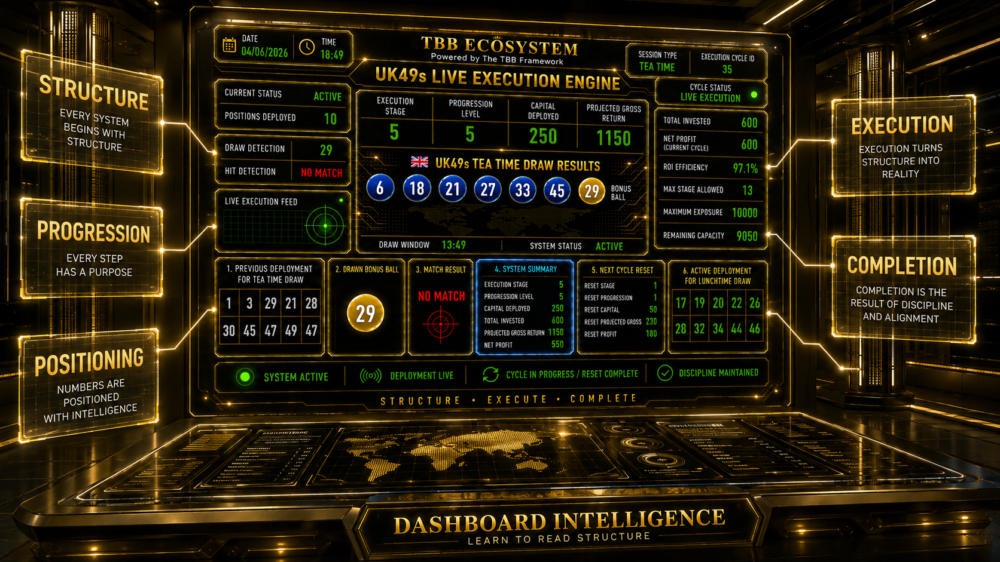

Observe Progression.
Track Execution.
Understand Continuity.
The dashboard is not designed to predict outcomes.
It is designed to provide visibility into a live execution cycle.
Every panel represents a component of the operational structure.
The objective is to understand how execution progresses from positioning to completion.
Every execution cycle follows a predefined path.
Positioning is deployed.
Exposure develops.
Progression advances.
Results are evaluated.
The cycle either continues or resets.
The dashboard allows observers to see where the expedition currently stands.
Execution Stage shows the current location of the cycle.
Think of it as a marker on an operational journey.
Progression Level tracks advancement through the execution structure.
As the cycle develops, progression reflects movement through predefined stages.
Capital Deployed represents the amount currently committed within the active cycle.
It provides visibility into operational commitment and scaling.
Projected Gross Return estimates the potential gross outcome associated with the current deployment structure.
Exposure Capacity tracks available operational space within predefined framework boundaries.
It helps maintain disciplined deployment.
Active Deployment displays the current positioning generated for the next execution cycle.
This section represents the live operational deployment.
Reset Logic defines how the framework returns to its starting position after cycle completion.
Continuity depends on disciplined reset procedures.